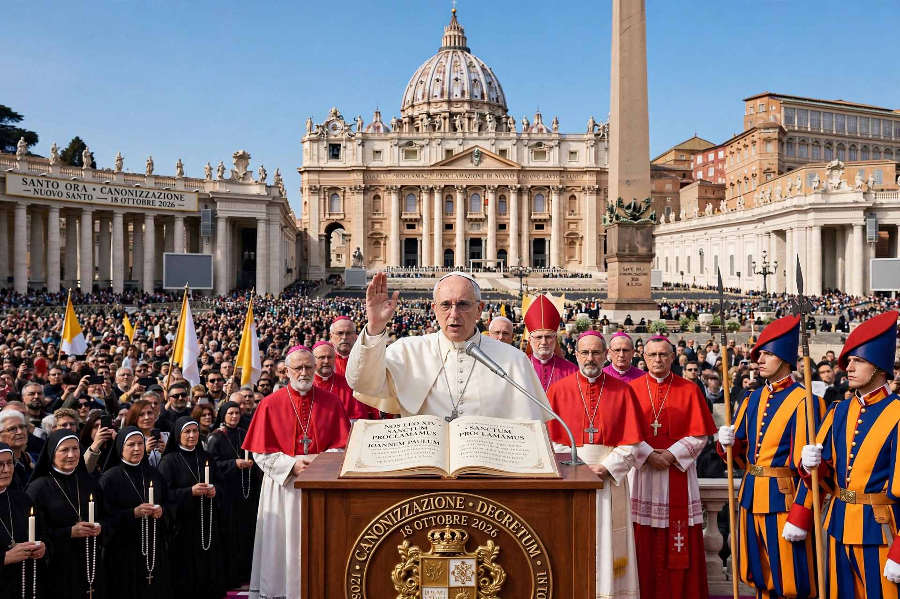

Canonization is the declaration by a Christian church that a deceased person is a saint, inscribing their name in the canon (official list) of saints and authorising public veneration.
| Canonization | |
|---|---|
 | |
| Churches | Catholic, Eastern Orthodox, others |
In the Roman Catholic Church the process, governed since 1983 by Divinus Perfectionis Magister, proceeds through stages: Servant of God, Venerable (heroic virtue), Blessed (beatification, usually requiring a verified miracle) and Saint (canonization, usually requiring a second miracle). Causes are investigated by the Dicastery for the Causes of Saints and decided by the Pope. Pope John Paul II canonized more saints (482) than any predecessor; Francis canonized large groups including the 800 Martyrs of Otranto.
Eastern Orthodoxy speaks of glorification, decided by synods, without the same miracle-counting juridical process. Anglican churches recognise saints but generally do not canonize new ones, with limited exceptions.
Recreated from memory.